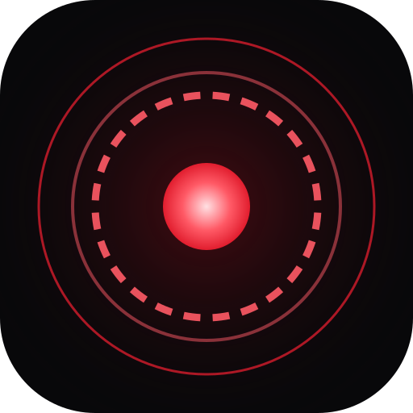

An agent that runs on your machine and knows you.
KAREN is not a cloud chat box. It reaches your files, your shell and your screen, remembers what you talked about, distils what it learns and does the work. You pick the model — local or cloud.
The installer is unsigned — Windows may warn about an “unknown publisher”. Once installed, the app downloads its own updates.

Try it
$ npm run karen -- serve KAREN ready: http://127.0.0.1:4317 you › remind me that the rent goes up in March karen › noted — valid from 2026-03-01. want a reminder the day before? you › what did I spend on the workshop last month? karen › 4,200 TL across 3 payments. the last one on Oct 24 was 1,200 TL. you › why did the build fail this morning? approval › run_command: git log --oneline -5 [y/N]
What it does
Talk, type, delegate
Speak into the mic, hear the answer. Wake it with “hey karen”. Recognition runs locally; your audio never leaves the machine.
Remembers, never deletes
Episodes, facts and skills live in separate layers. Repetition strengthens them, disuse fades them — but nothing is silently dropped.
Has an inner state
Cortisol, dopamine, serotonin and fatigue are recomputed every turn. They change tone, sampling temperature and context budget: no jokes in a crisis, suggestions when work is going well, quieter at night.
Does the maths
Budgets, durations and dates are kept as typed facts. “How much is left” and “when was the last time” are answered from the source, not guessed.
Uses the computer
Reads and writes files, runs commands, opens apps, takes screenshots, drives the clipboard — every call goes through a permission gate.
Works in the background
The brain opens its own sessions and brings the result back when a job is done. You never have to watch them.
Learns while you are away
When it notices you are idle it opens a restricted session, researches, writes what it learned into memory and leaves one line for you. Read-only, off by default.
Shows the map
One canvas: zoom out for continents (projects), in for cities (concepts) and streets (notes). Zoom only changes visibility — no node ever moves. Trauma notes carry a red ring.
A fixed character
KAREN’s identity sits in a read-only core and comes first in every prompt. The self-improvement system cannot even propose changing it; a manual edit quietly reverts.
Every provider
Ollama, LM Studio, llama.cpp, vLLM, Anthropic, OpenAI, Google, Groq, Cerebras, DeepSeek, Mistral, OpenRouter, Together, xAI, Fireworks, Perplexity, Azure.
Concepts that co-occur connect
Two memories recalled in the same turn thicken their link; an unused link thins but is never deleted. Once a link is strong enough, the memory surfaces on its own even when the words do not match.
Updates itself
When a new version ships, the app downloads it and offers a restart. No uninstall, no reinstall.
Install
KAREN-Setup-1.1.0.exe from Releases.karen voice-setup --yes downloads whisper (~150 MB). Your audio never leaves the machine.How it works
Everything local
The event log, memory and settings live on your disk. The server listens on 127.0.0.1 only and requires a token.
No claim without evidence
Every distilled note carries the event ids that support it. A note with no citation, unsupported by the transcript, is rejected.
Permission gate
Reads are free; writes stay inside the project root; deletion, network, interpreters and anything that spends money ask first.
Feelings are evidence too
The inner state is not invented: it is computed from tests, errors, corrections and elapsed time. It can be rebuilt from the log — delete the table and the same values come back. The model may suggest at most ±0.10.
Trauma never cools, intuition carries no prose
A trauma-marked memory never goes dormant and its strength never drops below the floor; the mark comes from deterministic detection or your approval, never from the model. Old, strong notes are still recalled as prose; their shared concepts are also added as a one-line weight hint with source ids.